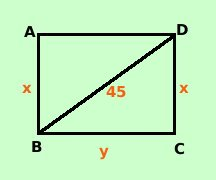

|
In un rettangolo la differenza fra il doppio dell'altezza e la misura della base vale 18 cm. La misura della diagonale vale 45 cm. Determinare l'area del rettangolo  Costruiamo prima la figura e scriviamo per esteso tutte le relazioni che abbiamo la differenza fra il doppio dell'altezza e la misura della base vale 18 cm lo traduco come sviluppo 2AB - BC = 18 cm__ __ La misura della diagonale vale 45 cm la traduco come BD = 45 cm __ Stavolta lo facciamo con un sistema sostituendo x ed y alle grandezze incognite AB__e BC__ Con due incognite abbiamo bisogno di due relazioni: la prima va bene, per la seconda dobbiamo trovare un teorema che includa tutti i dati (comprese le incognite messe) Viene immediato applicare il teorema di Pitagora al triangolo BCD AB = x __ BC = y __ Come prima relazione ottengo: 2x - y = 18 Per la seconda relazione applico il teorema di Pitagora al triangolo BCD ricordando che anche BD = x BC2 + CD2 = BD2 __ __ __ Sostituisco i dati e le incognite alle lettere x2 + y2 = 452 ottengo quindi il sistema di secondo grado: x2 + y2 = 2025 ricavo la y dalla prima relazione e ne sostituisco il valore nella seconda x2 + y2 = 2025 x2 + y2 = 2025 x2 + (2x - 18)2 = 2025 Calcolo il quadrato x2 + 4x2 - 72x + 324 = 2025 sommo ed ottengo 5x2 - 72x - 1701 = 0 La seconda e' un'equazione di secondo grado, la risolvo ed ottengo come soluzioni Calcoli x1 = 27 x2 = -63/5 Siccome devo trovare la misura x dell'altezza accetto solo la radice positiva. Sostituisco il valore 27 nel sistema x = 27 Quindi ottengo: AB = 27 cm __ BC = 36 cm __ e l'area sara' data da Area Rettangolo = AB · BC = 27 cm·36 cm = 972 cm 2__ __ |